Вопросы покупателей
Я недавно получил права, а теперь собираюсь купить собственный автомобиль. Что лучше: покупать новый или б/у?
Если ваша фамилия не Рокфеллер, то вам приходится задаваться этим вопросом. Конечно, хочется новый автомобиль, ведь он обладает рядом преимуществ, первое из которых именно то, что он новый! Он не бывал в ДТП, его не перекрашивали, на нем стоят исключительно «родные» запчасти и нет ни одного коррозийного пятнышка. Кроме того, к новому автомобилю прилагаются гарантия на три года и сервисное обслуживание.
Однако, выбрав новый автомобиль, не обладая достаточными средствами и стабильным доходом, вы сделаете ошибку. Предположим, вы смогли взять кредит на покупку автомобиля. Но ведь мало машину купить, ее еще нужно содержать. А новый автомобиль требует денег буквально с первой секунды – хотя бы на установку хорошей сигнализации, ведь симпатичная машина привлекает не только вас, но и автоугонщиков. Поэтому новому автомобилю понадобится не только сигнализация, но и гараж или хотя бы место на охраняемой стоянке (рис. 1.20). А ведь есть еще парковки около магазинов, офисов, фитнес-клубов, и далеко не все они охраняемые, а вот автоугонщики как раз весьма пристально следят за такими местами – это их потенциальные «охотничьи угодья».
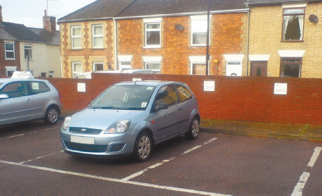
Рис. 1.20. Новому автомобилю требуется место на охраняемой стоянке
А уж если вы не уверены в своем мастерстве водителя, если вы – новичок за рулем, то учтите, что такой замечательный бонус, как гарантия, не распространяется на ДТП. Стоит вам только не вписаться в парковочное место, разбить блок-фару, повредить бампер и т. д. – все расходы по ремонту лягут на ваши плечи. А ведь новому автомобилю как-то неловко предложить подержанный бампер или блок-фару.
Автомобиль б/у тоже нуждается в сигнализации – хотя бы для того, чтобы его не взяли «покататься на время», «не разули и не раздели» (любителей автомобильной резины, комплектов инструментов и аудиотехники предостаточно) (рис. 1.21). Но сигнализация может быть значительно проще, чем для новой машины. В некоторых случаях достаточно просто отключателя массы (если автомобиль достаточно солидного возраста). И машину можно смело оставлять около офиса или магазина. По крайней мере, серьезных автоугонщиков такой автомобиль вряд ли заинтересует (если, конечно, это не раритетный Ferrari).
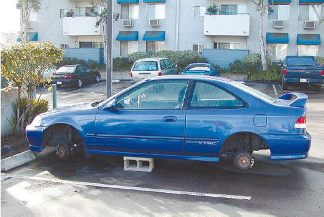
Рис. 1.21. «Разутый» автомобиль
В то же время автомобиль б/у – это тоже определенный риск. Риск того, что вам достанется «убитая» машина, которую лишь слегка «подмарафетили». Учтите, что мастера – «жестянщики», принимая автомобиль в ремонт и покраску, сразу задают вопрос: «Вам для себя или на продажу?» – и «на продажу» стоит дешевле, но и качество соответствующее.
У подержанного автомобиля нужно проверять все, начиная от того, не числится ли он в угоне, и заканчивая тщательнейшим осмотром внешнего вида и проверкой ходовых качеств. На автомобиль б/у не существует никаких гарантий и специального сервисного обслуживания (бесплатного в гарантийный период). И это, конечно, тоже его минус.
Зато он не требует таких расходов, как новый автомобиль (если, конечно, правильно выбран и не «убит» предыдущим владельцем). Его вполне устроят запчасти б/у, он не обидится, если даже ему предложат «неродные» запчасти. Он даже не будет каждый день просить: «Помой меня!» (а вот новый автомобиль будет этого требовать) (рис. 1.22).
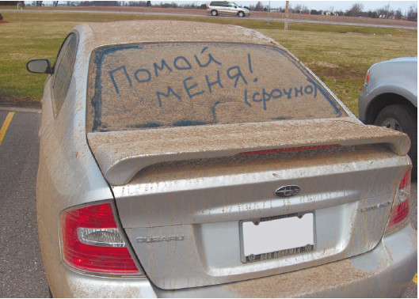
Рис. 1.22. Новый автомобиль нуждается в чистоте
Подержанный автомобиль проще и дешевле в эксплуатации и обслуживании. Кроме того, если вы – новичок за рулем, то не лучше ли для вас будет сначала «добить» автомобиль б/у, потренироваться на нем? А уже изучив на практике все нюансы обслуживания, сервиса, ремонта и эксплуатации собственного автомобиля, потом можно сделать и дорогостоящую покупку – новую, прямо с конвейера, машину (рис. 1.23).
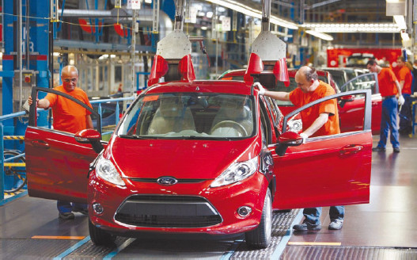
Рис. 1.23. Еще немного, и новая машина сойдет с конвейера
Только взвесив все плюсы и минусы как нового, так и б/у автомобиля, соразмерив свои желания со своими возможностями, вы сможете правильно ответить на вопрос, какой автомобиль покупать: новый или подержанный.
Можно ли покупать новый автомобиль с расчетом на перепродажу?Начинающий автовладелец, приобретая новый автомобиль, мотивирует такую покупку часто еще и тем, что впоследствии он сможет перепродать машину, практически не потеряв в цене. Вот только автомобиль начинает стремительно дешеветь с того момента, как сходит с конвейера. Выезд за заводские ворота – это уже потеря в цене, ведь с этой самой секунды модель начинает устаревать! Ну а уж если к этому прибавляется эксплуатация, то и говорить нечего (рис. 1.24).
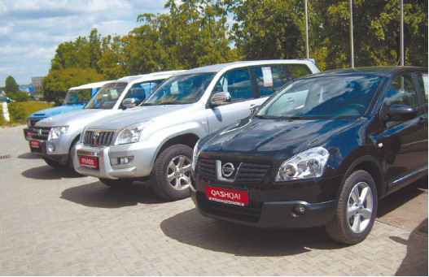
Рис. 1.24. Даже выставка автомобилей около автосалона снижает цену машины за счет хранения на открытом воздухе
Поэтому еще ни у кого не получилось продать автомобиль практически за ту цену, за которую он был куплен, – даже на следующий день после покупки (за исключением раритетных, антикварных авто) (рис. 1.25).
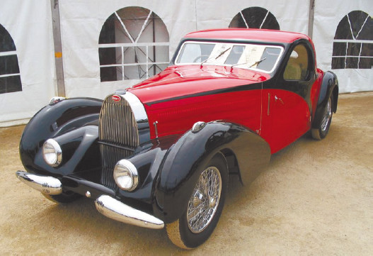
Рис. 1.25. Раритетный автомобиль с каждым годом только дорожает
Так что расчет на перепродажу – это расчет на убытки. Новый автомобиль нужно приобретать тогда, когда на нем собираются ездить.
Я впервые покупаю автомобиль. Что в этом случае лучше: покупать отечественную машину или иномарку?Есть те, кто вообще не считает автомобиль отечественного производства машиной, разве что, как Остап Бендер: «Посмотрите, Шура, что можно сделать из простой швейной машинки Зингера! Получилась прелестная колхозная сноповязалка». Есть ярые приверженцы именно отечественного автопрома, которые сверху вниз смотрят на все иномарки. Если вы принадлежите к тому или иному лагерю, то этот вопрос вообще для вас не стоит, он уже решен априори. Но если вы просто разумный человек, то обязательно зададитесь этим вопросом, подсчитаете все плюсы и минусы того или иного решения, подведете итоговую черту баланса и сделаете вывод.
Основных моментов будет два: финансовое положение и назначение автомобиля.
Стоимость отечественных автомобилей невозможно даже сравнивать с ценами на иномарки, а уж о запчастях и говорить нечего. Если переднее крыло для «Москвича-412» (рис. 1.26) будет стоить $5–7, то для Audi 80 – около $100 (а может, и дороже – в зависимости от года выпуска автомобиля). Причем Audi – это отнюдь не luxury-класс, а вполне экономичный вариант, что называется, бюджетный. Ну а если речь пойдет о покраске автомобиля, то за иномарку придется выложить от $600 до 1500 (опять же речь не идет о сегменте luxury). В то же время скромная отечественная машина перекрасится за $250–400. Снятое с иномарки зеркало – трагедия и удар по карману (при средней зарплате). Зеркало, снятое с отечественного автомобиля, – пробежка до блошиного рынка.
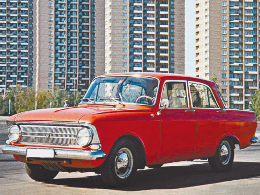
Рис. 1.26. «Москвич-412» – легенда отечественного автопрома
Правда, есть один эксплуатационный нюанс, в котором отечественные автомобили оказываются дороже иномарок, – расход топлива. Увы, свои «кони» «кушают» побольше, причем на 20–25 %, чем иномарка. При нынешних ценах на топливо это весьма существенно. Но есть выход из положения – газовое оборудование. Перевод отечественного автомобиля на систему «газ/бензин» снижает расходы на топливо (опять же на систему «газ/бензин» можно перевести и иномарку, но мало у кого поднимается на это рука, разве что на сильно подержанную иномарку солидного возраста, но такие и «кушают» гораздо больше своих более молодых собратьев).
Так что, если вы внимательно подсчитали свои доходы, то уже можете определиться, какой автомобиль вам более по карману. Имея средние доходы (ближе к нижней черте среднего), приобретать иномарку – это потом все время работать на автомобиль. Все удовольствие от собственных «колес» будет отравлено мыслями о стоимости запчастей, ремонта и т. д. Именно от таких владельцев, погнавшихся за престижной и красивой иномаркой, не соразмеривших свои доходы с предстоящими расходами на содержание автомобиля, и попадают в автосервисы «убитые» машины – их просто не ремонтируют до последнего, откладывая ремонт до лучших времен, когда накопятся деньги. Замена масла в картере двигателя осуществляется только тогда, когда оно становится не просто черным, а даже почти нетекучим – из-за частиц металла, окалины. Что при этом происходит с двигателем, страшно и рассказывать. Результатом является то, что некогда счастливый владелец иномарки вдруг обнаруживает себя хозяином груды металлолома, который даже продать-то нельзя, разве что на кузовную разборку, и то не всегда.
Назначение автомобиля – это то, что также следует учитывать (после финансов). Ведь машина, эксплуатирующаяся в городе и в трассовом режиме, требует различного обслуживания и различных расходов. Кроме того, одно дело – поездки на работу в городе, другое – рейсы на дачу за мешком картошки. Приобретая иномарку для того, чтобы ездить на ней в лес за грибами, можно сделать огромную ошибку – у большей части иномарок весьма невелик дорожный просвет (в том числе и у «паркетников») (рис. 1.27). Поэтому российские проселочные и лесные дороги только разбивают подвеску автомобиля. В то время как отечественная машина совершенно спокойно чувствует себя на этих дорогах.
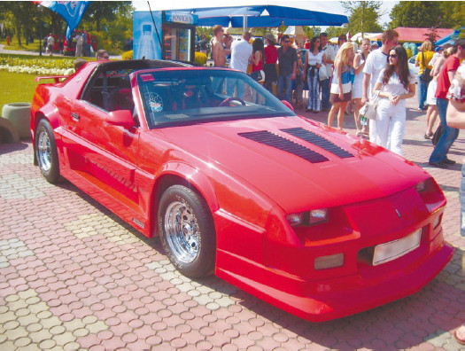
Рис. 1.27. Такой автомобиль для перевозки картошки не годится
Ну а по соображениям престижа можно как приобрести иномарку, так и сделать «куколку» из отечественного автомобиля с помощью оригинального тюнинга. Тут уже – дело вкуса.
Я присмотрел автомобиль на авторынке, но продавец мне не очень нравится, хотя сама машина хорошая. Нужно ли при покупке автомобиля б/у обращать внимание на продавца или важнее все-таки сам автомобиль?Когда делается такое ответственное приобретение, как автомобиль, важным является все: и сама машина, и тот, кто ее продает. В первую очередь есть опасность наткнуться на откровенного мошенника. Автомобиль может числиться в угоне – и совершенно неважно, что ему уже 10 лет, большую часть этого времени он мог бороздить просторы страны именно угнанным. Поэтому желательно не только изучать документы на машину, но и посмотреть документы продавца (конечно, не всегда можно проверить место проживания/прописки, но при возможности желательно).
Случается, что продавец себя даже не считает мошенником, а просто продает автомобиль, «подмарафеченный» для рынка (рис. 1.28), с множеством различных недостатков, которые станут проявляться буквально через несколько дней после покупки: начиная с небрежно заделанных и замазанных пятен коррозии и заканчивая проблемами с двигателем и ходовой частью.
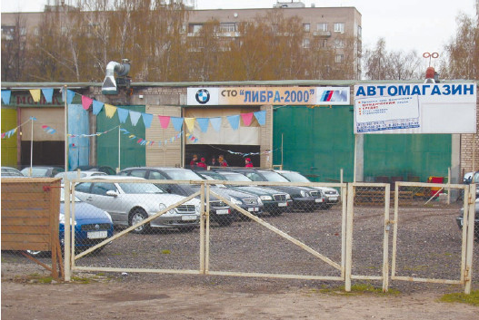
Рис. 1.28. Небольшой автомагазин. Здесь же – гаражные мастерские, где не слишком презентабельную машину подготовят к продаже
Поэтому при малейшем сомнении в честности продавца следует тут же отправляться в ближайший автосервис для полной диагностики автомобиля. Собственно говоря, лучше всего это делать в любом случае – есть сомнения в продавце или нет (ведь продавец может быть совершенно честным человеком, который просто не знает, что его машина «убита»). Единственный минус – осмотр на СТО стоит денег, но если в перспективе – ремонт только что купленного автомобиля, то диагностика в любом случае обходится дешевле.
У меня возникли сомнения в состоянии автомобиля, и продавец предложил поехать на СТО для диагностики. У него есть «своя» СТО, где осмотр машины обойдется гораздо дешевле. Стоит ли соглашаться на его предложение?У начинающего автомобилиста чаще всего нет «своей» СТО, а вот у продавцов по большей части имеется. Если продавец – мошенник, то у него будет наготове вариант с «прикормленным» мастером на какой-либо СТО и именно к этому мастеру он отправится с покупателем для проверки автомобиля. Так что ни в коем случае нельзя соглашаться на проверку на СТО продавца. Диагностика покупаемого автомобиля должна осуществляться либо на СТО покупателя, либо на нейтральной территории. «Дядя Вася» из ближайшего гаража, которого продавец предлагает в качестве эксперта, тоже не подходит.
Что лучше: выбирать автомобиль самостоятельно с осмотром на СТО или пригласить с собой опытного водителя?Даже самому опытному водителю или автомеханику при выборе и покупке автомобиля желательно иметь компанию (не зря ведь говорится, что одна голова – хорошо, а две – лучше). Что же касается водителя-новичка, то тут совет опытного человека просто необходим. Ведь диагностика на СТО стоит денег, и ездить туда всякий раз, когда вам покажется, что вы присмотрели хороший автомобиль, чтобы убедиться в обратном, может оказаться накладно.
Однако следует учитывать, что водитель со стажем совершенно не обязательно является опытным автомехаником и он вполне может ошибиться, оценивая состояние автомобиля (если речь идет о подержанном варианте). Поэтому совет «старшего товарища» вовсе не отменяет диагностики на СТО – нужно использовать и то и другое.
Я хочу купить машину у частного владельца в рассрочку, поскольку всей необходимой суммы у меня нет (есть только половина). Хозяин настаивает на таком варианте оформления: после получения 50 % стоимости автомобиля он дает мне доверенность на право пользования автомобилем без права продажи и передоверия. Я пользуюсь машиной по доверенности, пока не рассчитаюсь с ним полностью, после чего мы переоформляем автомобиль так, как положено (снятие с учета, оформление в комиссионном магазине и последующая постановка на учет на мое имя). Можно ли так делать и нет ли здесь каких-нибудь «подводных камней»?При таком варианте покупки «подводных камней» очень много. Понятно, что хозяин автомобиля не хочет переоформлять машину на незнакомого человека до окончательного расчета. Но учтите, что пока вы не рассчитаетесь с продавцом полностью и не переоформите автомобиль так, как это предусмотрено законом, факт покупки вами автомобиля юридически не будет существовать. Прежний хозяин, получив от вас какую-то часть стоимости автомобиля, может отозвать доверенность, в результате чего вы останетесь без машины и без денег и по закону впоследствии ничего не сможете доказать. Если же прежний хозяин машины, не дай бог, умрет, вам придется решать вопрос с его законными наследниками, поскольку доверенность сразу после его смерти станет недействительной. Если они окажутся людьми порядочными – считайте, что вам повезло. Кроме того, вступление в права наследования возможно только через полгода после смерти наследодателя, и шесть месяцев вы можете находиться в подвешенном состоянии: деньги отданы, а автомобиль однозначно не ваш и будет ли вашим – неизвестно.
Для подстраховки на случай непредвиденных обстоятельств следует при каждой передаче денег брать с хозяина автомобиля расписку в том, что он получил от вас такую-то сумму. В расписке обязательно должна быть указана дата, а сумма – в российских рублях, даже если расчет ведется другой валютой. Кроме того, в расписке следует указать, за что получены деньги: марка автомобиля, год выпуска, государственный регистрационный номер, номер шасси, номер двигателя – эти данные имеются в техпаспорте, и их следует сверить с номерами на автомобиле (шасси, двигатель).
Оптимальным же в данном случае является оформление договора в письменной форме, заверенного у нотариуса. В таком договоре оговариваются и суммы, и даты выплат, и данные об автомобиле. А каждая выплата денег по договору оформляется расписками (лучше всего – тоже нотариально заверенными).
Я присмотрел на рынке автомобиль, который устроил меня по всем параметрам: не ржавый, не битый, все работает нормально, пробная поездка недостатков не выявила. Но возникли вопросы после осмотра подкапотного пространства. Двигатель-то работает хорошо, не стучит, не троит, но под капотом очень грязно – сплошная пыль. Возле горловины, предназначенной для заливки масла, имеются масляные потеки (других потеков на двигателе нет). Очевидно, за машиной плохо ухаживали и ее двигатель очень запущен. Правильно ли я сделал, что отказался от покупки?Если никаких других проблем, кроме пыльного подкапотного пространства (рис. 1.29), обнаружено не было – ни с автомобилем, ни с документами, – то отказ от покупки является ошибкой. Дело в том, что честный продавец как раз обычно не моет двигатель перед продажей – ведь именно так можно с первого взгляда определить состояние мотора. Если его не трогали, значит, он не нуждался в ремонте.
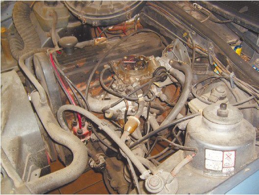
Рис. 1.29. Подкапотное пространство автомобиля: эту машину специально к продаже не готовили
К тому же мытье убирает все потеки масла, и на чистом двигателе невозможно рассмотреть, имеются ли какие-либо проблемы (рис. 1.30).
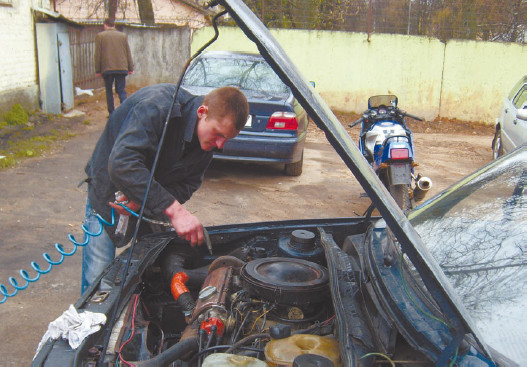
Рис. 1.30. Предпродажная чистка подкапотного пространства
Что же касается потеков масла у горловины, то такое возникает в результате неаккуратного заливания масла при замене или доливке (рис. 1.31).
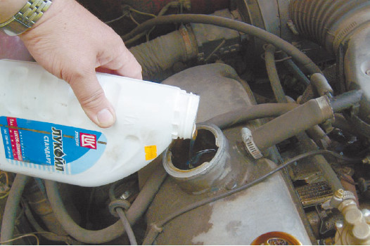
Рис. 1.31. Так образуются потеки масла у горловины для заливки, при этом двигатель в абсолютном порядке
Я присмотрел на рынке автомобиль, и все бы хорошо, но из выхлопной трубы идет белый дым. Продавец утверждает, что это из-за холодной погоды. Так ли это?Белый дым и выделение капель жидкости из выпускной трубы могут возникать сразу после «холодного старта» (запуск двигателя в холодную погоду) (рис. 1.32). В этом случае с автомобилем все в порядке.
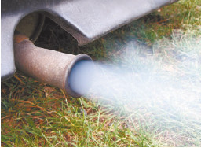
Рис. 1.32. Белый дым после «холодного старта»
Но это может быть и свидетельством неисправности: белый дым появляется еще и тогда, когда охлаждающая жидкость попадает в камеру сгорания: из-за прогара прокладки головки блока цилиндров вследствие перегрева двигателя и неправильной установки прокладки после ремонта; из-за того, что «повело» головку блока цилиндров из-за перегрева двигателя; из-за трещины в рубашке охлаждения блока цилиндров вследствие перегрева двигателя. Проверить это можно двумя способами: если при белом дыме постоянно снижается уровень охлаждающей жидкости, значит, эта жидкость попадает в камеру сгорания; и если белый дым пахнет сладким. Снижение уровня охлаждающей жидкости сложно заметить в процессе экспресс-диагностики на авторынке, но вот принюхаться к выхлопной трубе можно. Если сладкий запах есть, то правы вы. Если же запаха нет, а белый дым появляется действительно только после «холодного старта», а затем исчезает (когда прогреваются стенки выпускной системы), то прав продавец.
У автомобиля, который мне понравился на рынке, при запуске двигателя из выхлопной трубы идет черный дым. Продавец утверждает, что так и должно быть. Я же думаю, что это свидетельствует о неисправности двигателя. Кто прав?Чтобы выяснить, кто прав в данном случае, нужно знать тип двигателя: бензиновый или дизельный. Дело в том, что особенностью дизельного двигателя является то, что после его запуска первый выхлоп – черный. Если чернота почти сразу же исчезает, значит, двигатель исправен.
Если же двигатель бензиновый, то черный выхлоп – сигнал неполного сгорания масла, недостатка воздуха, высокого содержания углерода. Возможно, нарушена герметичность форсунок, загрязнен воздушный фильтр, выставлен неверный угол опережения впрыска, загрязнен продуктами сгорания и маслами впускной коллектор или на двигателе недостаточная компрессия. Некоторые причины черной дымности относительно безобидны: например, загрязнение воздушного фильтра требует лишь его замены, и это достаточно дешево. Другие же требуют значительных усилий и расходов. Однозначный ответ на вопрос, что же именно является причиной такого выхлопа бензинового двигателя, можно получить после диагностики на СТО, а уж тогда принимать решение о покупке.